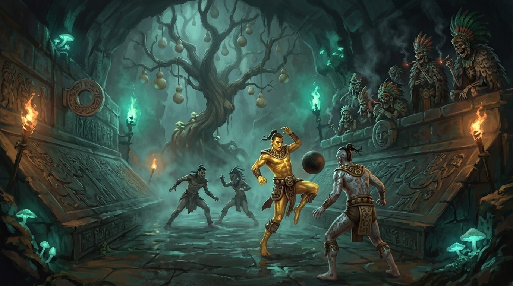
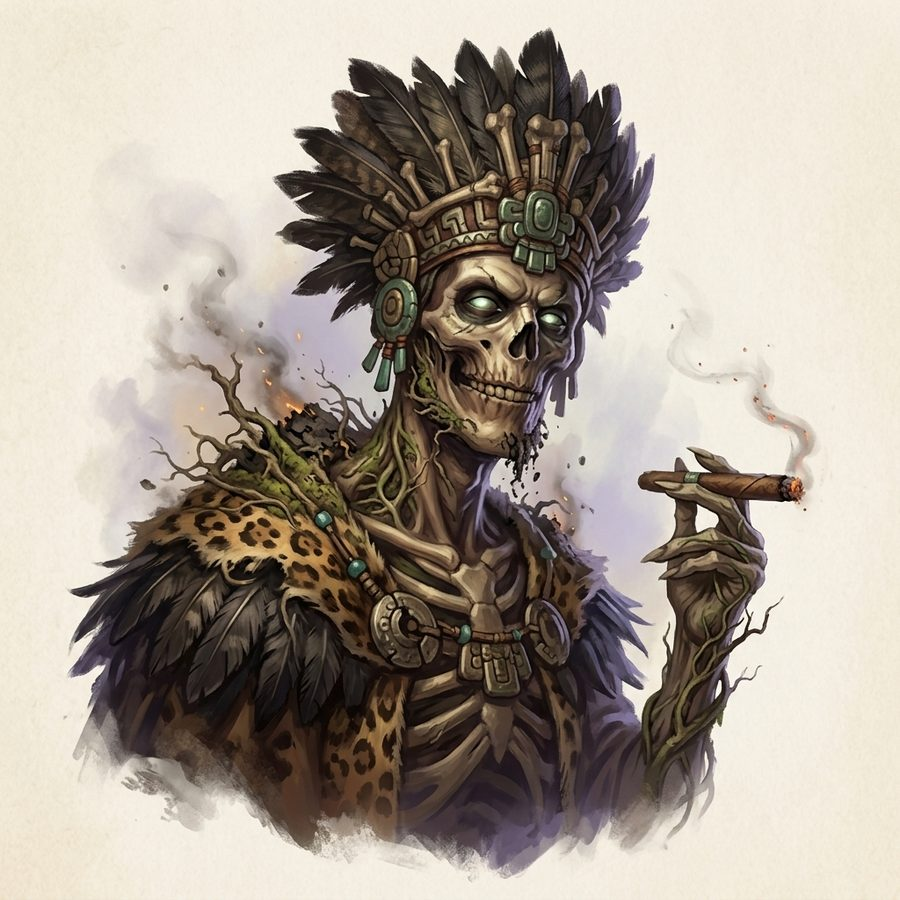
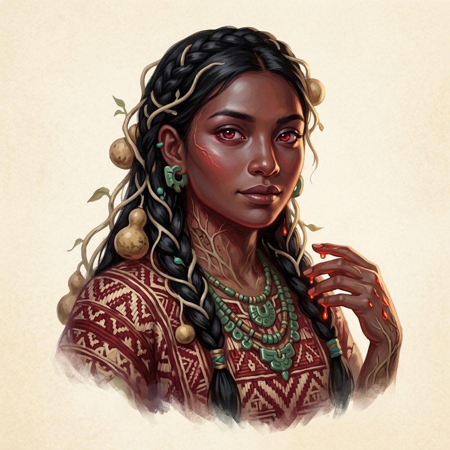
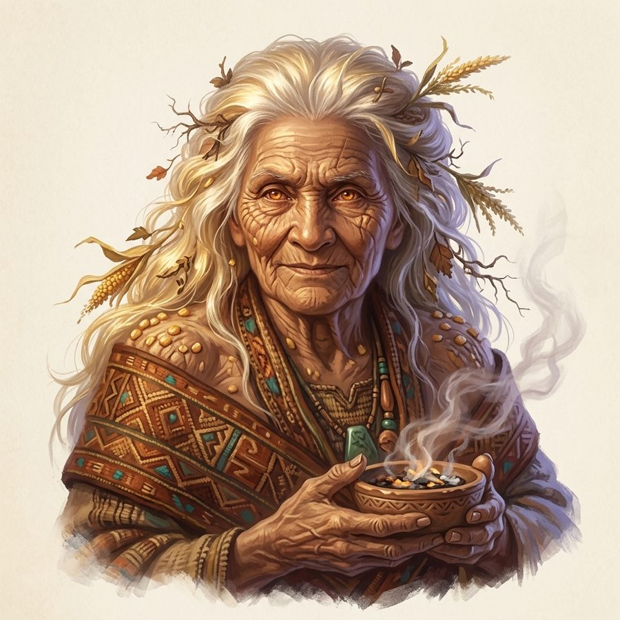
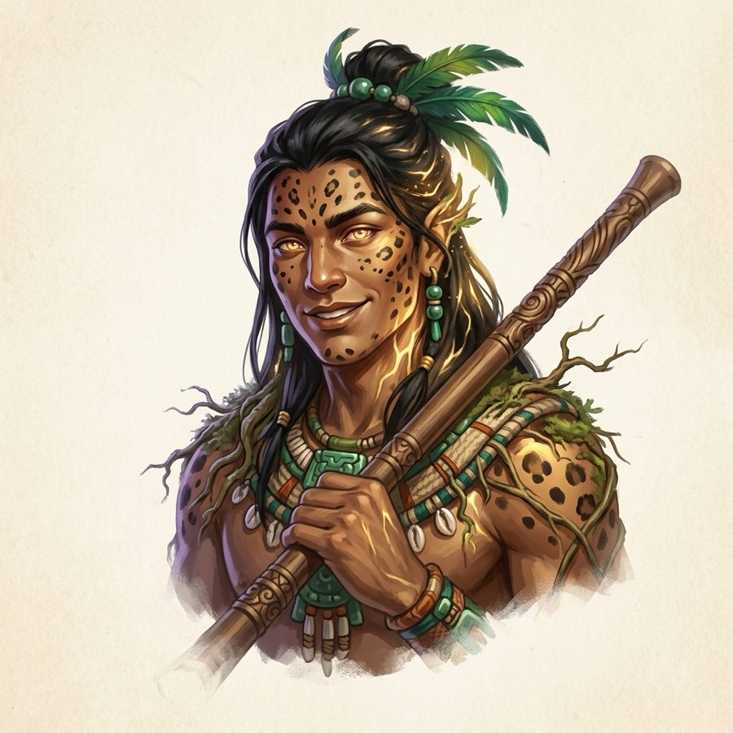
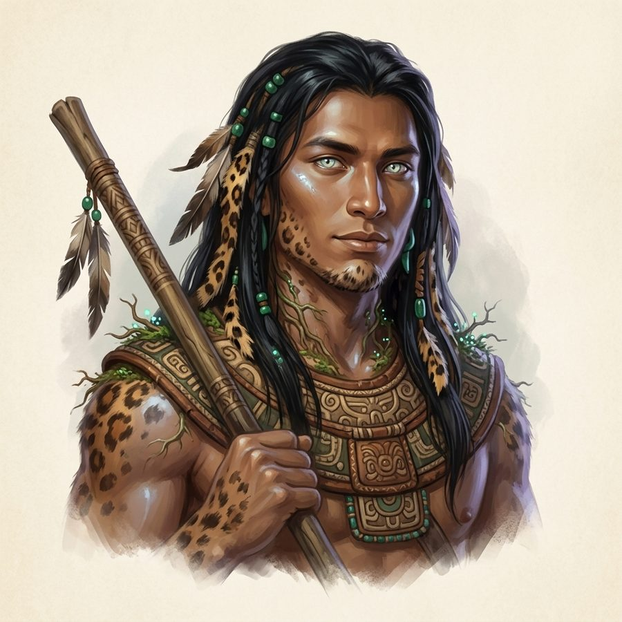

Maya · · 25 min lezen
De tweeling van Xibalba
Hoe twee broers de heren van de dood versloegen

In de oudste tijden, toen er nog geen zon aan de hemel stond en de mensen nog niet gemaakt waren, leefde er in de bergen van Guatemala een oude vrouw. Ze heette Xmucane, en ze was de grootmoeder van alles wat nog moest komen. Ze had twee zonen, en die zonen hielden van één ding meer dan van wat ook: het balspel.
Ze heetten Eén Hunahpu en Zeven Hunahpu. In de taal van de K'iche'-Maya zijn het namen van dagen in de kalender, zoals wij iemand Maandag zouden kunnen noemen. Elke dag gingen ze naar het balveld om te spelen. Het was een lange strook aangestampte aarde tussen twee schuine stenen muren. Ze droegen dikke beschermende gordels om hun heupen, leren beschermers om hun onderarmen, en ze sloegen een zware bal van rubber heen en weer, met hun heupen, nooit met hun handen. Het geluid ervan, het doffe stuiteren en het geschreeuw en gelach, droeg ver over de bergen.
Het droeg ook naar beneden.
De boodschappers
Onder de aarde ligt Xibalba, de plek van de angst. Daar wonen de heren van de dood. De hoogste twee heten Eén Dood en Zeven Dood. Onder hen dienen tien andere heren, steeds per twee, en elk paar heeft een eigen manier om mensen te laten sterven. Vliegende Korst en Verzameld Bloed maken het bloed ziek. Etterdemon en Geelzuchtdemon laten lichamen opzwellen. Botstaf en Schedelstaf maken van de doden geraamtes. Veegseldemon en Steekdemon wachten in de vuile hoeken van slecht geveegde huizen. Vleugel en Draagband laten mensen langs de weg sterven, bloed ophoestend.

De heren van Xibalba hoorden het gestamp van het balspel boven hun hoofden, dag in dag uit, en ze ergerden zich. Wie dachten die twee wel dat ze waren? Ze besloten hen naar beneden te halen. 'Ga ze uitnodigen,' zeiden ze tegen hun boodschappers. 'Zeg dat we vol bewondering zijn. Zeg dat ze hier met ons moeten komen spelen, zodat wij weer opleven. En dat ze hun spullen meenemen: hun gordels, hun armbeschermers en hun bal.'
De boodschappers waren vier uilen. Pijluil, die door de lucht schoot als een pijl. Eenpootuil, die maar één poot had. Ara-uil, met een rode rug. En Schedeluil, die alleen maar een schedel was met vleugels eraan, zonder poten. Ze streken neer op de muur van het balveld waar de broers aan het spelen waren, en ze herhaalden woord voor woord wat de heren hadden gezegd.
De broers wisten wat het betekende. Maar een uitnodiging van de heren van Xibalba sla je niet af. Ze gingen naar huis om afscheid te nemen. Hun bal hingen ze op onder het dak. 'We komen terug om hem weer te gebruiken,' zeiden ze. Tegen de twee zonen van Eén Hunahpu, Hun Batz en Hun Chouen, zeiden ze: 'Speel maar fluit en zing, schrijf en snijd in hout. Houd ons huis warm, en het hart van jullie grootmoeder.' Xmucane huilde. 'We gaan,' zeiden haar zonen, 'maar we zullen niet sterven. Wees niet bedroefd.'
De weg naar beneden
De uilen gingen hun voor. Ze daalden steile trappen af, diep de aarde in, en kwamen uit in kloven waar het water raasde. De ene kloof heette Bevende Kloof, de andere Ruisende Kloof. Ze staken een rivier over die krioelde van schorpioenen, en werden niet gestoken. Ze kwamen bij een rivier van bloed en kwamen erdoor, omdat ze er niet van dronken. Ze kwamen bij een rivier van etter, en ook daar kwamen ze doorheen.
Toen kwamen ze bij een kruispunt van vier wegen: een rode weg, een zwarte, een witte en een gele. Ze bleven staan en twijfelden. Toen sprak de zwarte weg: 'Neem mij. Ik ben de weg van de heer.'
Daar, bij dat kruispunt, verloren ze, al wisten ze het nog niet.
Ze volgden de zwarte weg tot ze bij de raadszaal van Xibalba kwamen. Daar zaten de heren op een rij, in prachtige kleren. De broers bogen voor de eerste. 'Goedemorgen, Eén Dood,' zeiden ze. En voor de tweede: 'Goedemorgen, Zeven Dood.'
Er kwam geen antwoord. Het waren houten poppen, mooi aangekleed en vooraan neergezet. De echte heren zaten erachter, en ze bulderden van het lachen. Ze lachten tot hun buik pijn deed en ze over de grond rolden.
Toen ze uitgelachen waren, zei Eén Dood: 'Fijn dat jullie gekomen zijn. Morgen spelen we. Ga zitten, op onze bank.' Maar de bank was een gloeiend hete steen. De broers sprongen op, draaiden rond, vonden nergens verkoeling, en heel Xibalba lag weer dubbel van het lachen.
Het Donkere Huis
'Ga nu maar naar je slaapplaats,' zeiden de heren. 'Er komt iemand een fakkel en sigaren brengen.'
Hun slaapplaats was het Donkere Huis, waar alleen maar duisternis was. Een boodschapper bracht een brandende fakkel en voor elk van hen een brandende sigaar. 'Zo zeggen de heren,' zei hij. 'Morgenochtend moeten jullie ze teruggeven. Ze mogen niet opgebrand zijn. Ze moeten heel terugkomen.'
Hoe houd je een fakkel en twee sigaren de hele nacht brandend zonder dat ze opbranden? Dat kan niet, en dat was ook de bedoeling. De broers zaten in het donker, de fakkel en de sigaren brandden op, en toen het licht werd waren ze verdwenen.
'Waar zijn mijn sigaren en mijn fakkel?' vroeg Eén Dood de volgende ochtend.
'Op, heer.'
'Goed. Dan is jullie dag nu voorbij.'
Ze werden geofferd en begraven bij het balveld van Xibalba, op een plek die het Verpletterende Balveld heette. Het hoofd van Eén Hunahpu sneden de heren af. 'Hang het in de boom langs de weg,' zei Eén Dood.
Die boom had nog nooit vrucht gedragen. Maar zodra het hoofd tussen de takken hing, zat de boom vol ronde, bleke vruchten. Ze leken zo op het hoofd van Eén Hunahpu dat niemand meer kon zien welke vrucht het hoofd was. Zo ontstond de kalebasboom, waarvan de vruchten tot op de dag van vandaag op schedels lijken. De heren van Xibalba voelden dat er iets vreemds aan die boom was. 'Laat niemand van die vruchten plukken,' zeiden ze. 'Laat niemand onder die boom gaan staan.'
Het meisje en de boom
Maar een verbod maakt nieuwsgierig.
In Xibalba woonde een meisje. Haar vader was heer Verzameld Bloed, en zij heette Xquic, Vrouwe Bloed. Ze hoorde haar vader vertellen over de vreemde boom en zijn vruchten, en ze kon het niet uit haar hoofd zetten. 'Waarom zou ik hem niet mogen zien?' dacht ze. 'Ze zeggen dat de vruchten heerlijk zijn.'

Ze ging alleen naar de boom bij het Verpletterende Balveld, en ze stond eronder en keek omhoog. 'Zou ik sterven als ik er één pluk?' vroeg ze hardop. 'Zou iemand het merken?'
Toen sprak de schedel tussen de takken. 'Wat wil je daarvan? Het zijn alleen maar schedels, ronde dingen in de takken. Die wil je niet.'
'Ik wil ze wel,' zei het meisje.
'Steek dan je rechterhand uit.'
Ze stak haar hand omhoog, naar het gezicht van de schedel. De schedel spuwde, recht in haar handpalm. Ze keek naar haar hand, maar er was niets te zien.
'Mijn speeksel is een teken dat ik je gegeven heb,' zei de schedel. 'Dit hoofd van mij werkt niet meer. Het is alleen nog maar bot. Zo gaat het met iedereen: zolang een groot man leeft, heeft hij een mooi gezicht, en als hij sterft, worden de mensen bang van zijn botten. Maar zijn kinderen zijn als zijn speeksel. Ze zijn zijn wezen. Als zijn zoon groot wordt, is er niets verloren. Dan gaat hij verder, in zijn dochters en zijn zonen. Ga nu naar boven, naar de aarde. Je zult niet sterven. Vertrouw op mijn woord.'
Het meisje ging naar huis. En in haar buik groeiden twee kinderen, alleen uit dat speeksel.
Een hart van hars
Na zes maanden kon ze het niet meer verbergen. Haar vader zag het. 'Van wie is het kind in je buik, mijn dochter?'
'Ik heb geen kind, vader. Ik heb het gezicht van geen enkele man gekend.'
Dat was waar, en tegelijk was het een raadsel: de vader van haar kinderen hád ook geen gezicht meer. Maar Verzameld Bloed geloofde haar niet. Samen met Eén Dood en Zeven Dood besliste hij dat ze geofferd moest worden. De vier uilen kregen een schaal en het offermes. 'Breng haar hart terug in deze schaal,' zeiden de heren, 'zodat wij het kunnen bekijken.'
De uilen tilden het meisje op in hun klauwen en vlogen met haar weg. Maar onderweg begon ze te praten. 'Jullie zullen me niet doden. Wat er in mijn buik zit, is niet uit ontrouw ontstaan. Het komt van het hoofd van Eén Hunahpu, in de boom bij het balveld.'
De uilen geloofden haar. 'Maar wat moeten we dan in de schaal leggen?' vroegen ze. 'We moeten een hart meebrengen. En we willen niet dat je sterft.'
Ze bracht hen naar een boom met rode bast en sneed erin. Er welde dik, rood sap uit, dat in de schaal droop en daar stolde tot een ronde klomp, glanzend rood als bloed. Een hart van hars. 'Dit is wat jullie de heren geven,' zei ze. 'En weet dit: voortaan zullen jullie niet meer hier beneden wonen en mensen naar hun dood lokken. Op aarde zullen ze jullie eren.'
De uilen brachten de schaal naar Eén Dood. Hij pakte de klomp op met zijn vingers. Hij droop rood. 'Leg het op het vuur,' zei hij. Toen de hars warm werd, verspreidde zich een geur waar alle heren van Xibalba gretig omheen kwamen staan, voorovergebogen, snuivend. En terwijl ze zich bogen over het vuur, brachten de uilen het meisje naar het gat dat naar de bovenwereld leidde.
Zo werden de heren van Xibalba voor het eerst om de tuin geleid. Door een meisje.
Een net vol maïs
Xquic klom omhoog en zocht het huis van Xmucane. 'Ik ben je schoondochter,' zei ze tegen de oude vrouw. 'Ik draag de kinderen van Eén Hunahpu.'

Xmucane wilde er niets van weten. 'Mijn zonen zijn dood. Ze zijn gestorven in Xibalba. Alleen Hun Batz en Hun Chouen zijn er nog over. Ga terug waar je vandaan komt.'
'Ze leven,' zei Xquic. 'Wat er met hen gebeurd is, is alleen hoe hun licht zich laat zien. Je zult zijn gezicht terugzien in de kinderen die ik draag.'
'Goed dan,' zei de oude vrouw ten slotte. 'Als je echt mijn schoondochter bent: ga naar de maïsakker en haal een groot net vol maïs. Dan geloof ik je.'
Xquic ging naar de akker van Hun Batz en Hun Chouen. Er stond één maïsplant, met één maïskolf. Niet twee of drie, maar één. Haar hart zonk. 'Waar haal ik een heel net vol vandaan?'
Ze riep de beschermsters van het voedsel aan, de vrouwen van de kalenderdagen, die over de maïs waken. Toen pakte ze de zijden haren boven aan de kolf en trok er zachtjes aan. Ze plukte de kolf niet. Maar in het net verschenen kolven, steeds meer, tot het net overvol was. Het was zo zwaar dat de dieren het voor haar naar huis droegen.
Xmucane geloofde haar ogen niet. 'Waar heb je dat gestolen? Ik ga kijken of je mijn hele akker kaal hebt geplukt.' Ze liep naar de akker. Daar stond de maïsplant, met nog altijd die ene kolf eraan. En op de grond eronder zag ze de afdruk van het net. Ze liep terug naar huis. 'Dit is het teken,' zei ze. 'Je bent echt mijn schoondochter. Ik zal goed letten op wat je doet, want mijn kleinkinderen zijn nu al betoverd.'
Twee broers in het bos
Toen de dag kwam, beviel Xquic in de bergen van een tweeling. Ze noemde ze Hunahpu en Xbalanque. Thuis wilden de baby's niet slapen; ze huilden en krijsten. 'Breng ze weg,' zei de grootmoeder. Hun halfbroers, Hun Batz en Hun Chouen, legden ze op een mierenhoop. Daar sliepen ze heerlijk. Ze legden ze in een doornstruik. Ook daar overkwam hun niets. De halfbroers waren jaloers. Als het aan hen had gelegen, waren de kleintjes gestorven.

Hun Batz en Hun Chouen waren grote kunstenaars, fluitspelers, zangers, schrijvers en houtsnijders. Ze waren wijs. Maar ze gunden hun jongere broers niets. De tweeling groeide op in de bergen en ging elke dag jagen met blaaspijpen. Als ze thuiskwamen met vogels, aten de oudere broers ze op. Als er eten was gekookt, was het op voor zij terug waren. De tweeling werd niet boos. Ze verdroegen het. Ze wisten wie ze waren.

Tot ze op een dag thuiskwamen zonder vogels. 'Ze zitten vast in de top van een boom,' zeiden ze tegen hun grootmoeder. 'We kunnen er niet bij. Kunnen onze grote broers ons helpen?'
De volgende ochtend gingen ze met z'n vieren naar een hoge boom vol zingende vogels. De tweeling schoot met de blaaspijpen, maar geen vogel viel naar beneden. 'Klim maar naar boven om ze te halen,' zeiden ze. De halfbroers klommen. En terwijl ze klommen, groeide de boom. Hij zwol op en schoot de hoogte in, tot Hun Batz en Hun Chouen in de top zaten en niet meer naar beneden durfden.
'Help ons, broertjes!' riepen ze. 'Deze boom is doodeng!'
'Maak je lendendoek los,' riepen de tweeling terug, 'en trek het lange eind naar achteren. Dan kun je je makkelijker bewegen.'
De halfbroers deden het. Meteen werden de einden van hun lendendoeken staarten, en zij werden slingerapen. Krijsend en kwetterend verdwenen ze door de boomtoppen, de bergen in.
Thuis vertelde de tweeling het aan hun grootmoeder. Xmucane schrok. 'Hebben jullie je broers iets aangedaan?'
'Wees niet bedroefd, grootmoeder. Je zult hun gezichten terugzien. Maar het is een test. Je mag niet lachen.'
Ze pakten hun fluit en trommel en speelden een lied dat 'Hunahpu Slingeraap' heette. En daar kwamen Hun Batz en Hun Chouen dansend aan, het erf op. Maar toen de grootmoeder hun gezichten zag, hun dikke buiken en hun rode, getuite monden, kon ze haar lachen niet inhouden. De apen schaamden zich en vluchtten het bos weer in.
Ze probeerden het nog een keer, en nog een keer. De derde keer hield Xmucane het bijna vol, maar toen klommen de apen tegen de muur op, snoven en trokken zulke gekke gezichten dat ze toch in lachen uitbarstte. De vierde keer kwamen ze niet meer.
'We hebben het geprobeerd, grootmoeder,' zeiden de tweeling. 'Wees niet bedroefd. Wij zijn er nog. Houd maar van onze moeder.' En de apen werden niet vergeten. Sindsdien roepen fluitspelers, zangers, schrijvers en houtsnijders hen aan als hun beschermers.
De bal onder het dak
Nu de oudere broers weg waren, moest de tweeling voor eten zorgen. Ze gingen een stuk bos kappen voor een maïsakker. Maar ze deden dat op hun eigen manier. Ze sloegen hun bijl in een boom, en de bijl hakte vanzelf verder. Ze staken hun hak in de grond, en de hak ging vanzelf aan het werk. Zelf gingen ze jagen. Een tortelduif hield de wacht, en zodra die riep dat grootmoeder eraan kwam met het middageten, grepen ze snel hun gereedschap, smeerden aarde over hun handen en strooiden houtsnippers in hun haar, alsof ze de hele ochtend hard hadden gewerkt.
De volgende ochtend stond het hele bos weer overeind. Die nacht verstopten ze zich bij de akker. Midden in de nacht kwamen alle dieren, groot en klein. 'Sta op, bomen! Sta op, struiken!' riepen ze, en alles groeide terug. De tweeling sprong tevoorschijn. De poema en de jaguar ontsnapten. Het hert en het konijn grepen ze bij hun staart, maar die braken af. Daarom hebben herten en konijnen nog altijd korte staartjes.
Alleen de rat ving ze, in een net. Ze hielden zijn staart boven het vuur, en daarom zijn rattenstaarten kaal. 'Dood me niet,' piepte de rat. 'Jullie zijn helemaal geen boeren. Er is iets wat van jullie is. Het hangt onder het dak van jullie huis: de gordels, de armbeschermers en de bal van jullie vader en oom. Jullie grootmoeder heeft ze verstopt, omdat jullie vader daardoor gestorven is.'
De tweeling bedacht een list. Thuis vroegen ze om een pittige pepersaus, en ze dronken de waterkruik leeg. 'We hebben zo'n dorst, grootmoeder!' Xmucane ging naar de rivier om water te halen. Maar de tweeling stuurde een mug, die een gaatje prikte in haar kruik, zodat ze hem maar niet vol kreeg. Ondertussen zaten de jongens aan tafel, keken in hun saus, en zagen daarin de weerspiegeling van de rat, hoog onder het dak, bij de bal. De rat knaagde de touwen door, en de uitrusting viel naar beneden.
Ze verstopten alles langs de weg naar het balveld. Toen liepen ze naar de rivier en hielpen grootmoeder de kruik te dichten.
Een luis met een boodschap
Daarna speelden ze elke dag, op het oude balveld van hun vader, dat ze eerst helemaal schoonveegden. En natuurlijk hoorden de heren van Xibalba het. 'Daar is weer iemand boven ons hoofd aan het stampen,' zei Eén Dood. 'Schamen ze zich niet? Zijn Eén Hunahpu en Zeven Hunahpu niet gestorven toen ze zich groot wilden maken? Haal ze hierheen. Over zeven dagen spelen we.'
De boodschappers kwamen bij het huis van Xmucane, maar de jongens waren op het balveld. Dus gaven ze de boodschap aan haar. Toen ze weg waren, zat de oude vrouw alleen te huilen. Precies zo waren de boodschappers gekomen voor haar zonen.
Toen viel er een luis op haar. 'Kleinkind,' zei ze tegen de luis, 'wil jij mijn kleinzoons de boodschap brengen?' De luis ging op weg, maar hij was niet erg snel. Onderweg zat een pad. 'Zal ik je inslikken?' vroeg de pad. 'Dan gaat het sneller.' Hij slikte de luis in, maar ook de pad was niet snel. Een slang slikte de pad in. En een valk slikte de slang in en vloog naar het balveld.
'Wak-ko! Wak-ko!' riep de valk vanaf de muur. De tweeling schoot met hun blaaspijp en raakte hem in het oog. 'Ik heb een boodschap in mijn buik,' zei de valk. 'Maar genees eerst mijn oog.' Ze schraapten een stukje van hun rubberen bal en legden het op zijn oog, en het genas. De valk spuugde de slang uit. De slang spuugde de pad uit. De pad probeerde te spugen, maar er kwam niets. Pas toen ze zijn bek openwrikten, vonden ze de luis. Die zat gewoon achter zijn tanden. De pad had hem nooit echt ingeslikt.
'Jullie grootmoeder zegt: er zijn boodschappers gekomen uit Xibalba. Over zeven dagen moeten jullie daar spelen. Ze huilt. Ze roept jullie.'
Twee maïskolven
De tweeling ging naar huis. 'We moeten gaan, grootmoeder,' zeiden ze. 'Maar we laten een teken achter.' Ze plantten elk een jonge maïskolf, midden in het huis, in de droge grond. 'Als ze verdorren, weet je dat we dood zijn. Als ze weer uitlopen, weet je dat we leven.'
Toen pakten ze hun blaaspijpen en daalden af.
Ze gingen dezelfde steile trappen af als hun vader. Ze kwamen bij de rivier van bloed en de rivier van etter, en ze dreven eroverheen, liggend op hun blaaspijpen. Ze kwamen bij het kruispunt van de vier wegen, en ze aarzelden niet. Ze wisten welke weg naar Xibalba leidde.
Bij het kruispunt trok Hunahpu een haar uit zijn knie en maakte er een mug van. 'Vlieg vooruit,' zei hij, 'en bijt ze allemaal, de een na de ander. Daarna mag je voortaan het bloed drinken van iedereen die over de weg komt.'
De mug vloog de zwarte weg af naar de raadszaal. Hij beet de eerste die daar zat. Niets. Hij beet de tweede. Weer niets: houten poppen. Toen beet hij de derde.
'Au!' zei Eén Dood.
'Wat is er, Eén Dood?' vroeg de heer naast hem.
'Ik word gebeten!'
'Au!' zei de vierde. 'Wat is er, Zeven Dood?' vroeg Eén Dood. En zo ging het de hele rij langs. Elke heer die gebeten werd, gilde, en de heer naast hem vroeg wat er was en noemde hem bij zijn naam. Vliegende Korst, Verzameld Bloed, Etterdemon, Geelzuchtdemon, Botstaf, Schedelstaf, Vleugel, Draagband, Bloedige Tanden, Bloedige Klauwen. Aan het eind van de rij kende de tweeling ze allemaal.
Toen ze in de raadszaal kwamen, zei iemand: 'Groet de heren die daar zitten.'
'Dat zijn geen heren,' zeiden ze. 'Dat zijn houten poppen.' En ze liepen erlangs en groetten de echte heren, één voor één, bij hun naam. 'Goedemorgen, Eén Dood. Goedemorgen, Zeven Dood. Goedemorgen, Vliegende Korst.' Niemand werd overgeslagen.
Het werd stil in Xibalba. Niemand lachte.
'Ga zitten,' zei Eén Dood ten slotte, 'op onze bank.'
'Dat is geen bank voor ons,' zeiden de tweeling. 'Dat is een hete steen.'
Vuurvliegjes
Ze werden naar het Donkere Huis gestuurd. Weer kwam er een boodschapper met een brandende fakkel en twee brandende sigaren. 'Morgenochtend teruggeven. Heel.'
'Goed,' zeiden de broers. Ze bliezen de fakkel uit en staken er de rode staartveer van een ara in, zodat het van buiten leek alsof hij vlamde. Op de punten van de sigaren zetten ze vuurvliegjes, die de hele nacht gloeiden. De wachters buiten zagen het licht en wreven in hun handen. 'Die zijn erbij.'
De volgende ochtend gaven de tweeling de fakkel en de sigaren terug, onaangeroerd. De heren keken ernaar en keken elkaar aan. 'Waar komen die vandaan? Wie heeft hen verwekt? Wie heeft hen gebaard?' fluisterden ze. 'Dit is niet goed.'
'Waar komen jullie eigenlijk vandaan, jongens?' vroeg Eén Dood.
'We moeten wel ergens vandaan komen,' zeiden de broers, 'maar we weten het niet.'
Een bal met een mes erin
Toen gingen ze spelen. 'We gebruiken onze bal,' zeiden de heren. 'Nee, de onze,' zeiden de tweeling. 'Nee, de onze.' 'Goed dan.' 'Het lijkt een schedel,' zeiden de heren, 'maar dat is alleen een tekening.' 'Het is een schedel,' zeiden de tweeling.
De heren gooiden hun bal. Hij landde voor Hunahpu's gordel, en meteen sprong er een mes uit, het Witte Mes, dat over het hele veld kletterde en sloeg, recht op de jongens af.
'Wat is dát?' riepen ze. 'Jullie willen ons gewoon dood hebben. Zijn we niet gekomen toen jullie riepen? Dan gaan we wel weer.' Dat wilden de heren niet. 'Blijf, jongens. We spelen met jullie bal.'
Om wat speelden ze? 'Vier schalen bloemen,' zeiden de heren. 'Een schaal rode bloemblaadjes, een schaal witte, een schaal gele en een schaal grote.' De tweeling speelde goed, met hun hele hart, maar aan het eind lieten ze de heren expres winnen. 'Morgenochtend vroeg brengen jullie ons de bloemen,' zeiden de heren tevreden. Ze wisten zeker dat de jongens dat nooit zouden kunnen. De enige bloemen in Xibalba groeiden in hun eigen tuin, en die werd bewaakt.
Die nacht moesten de broers in het Messenhuis slapen, waar rijen messen heen en weer zwaaiden. 'Jullie krijgen voortaan het vlees van de dieren,' zeiden de tweeling tegen de messen, en de messen kwamen tot rust en lieten hun punten zakken. Toen riepen ze de mieren. 'Bladsnijders, kom! Haal bloemen voor de heren.' In het donker zwermden de mieren uit over de tuin van Eén Dood en Zeven Dood. De twee nachtzwaluwen die de tuin bewaakten, zaten in de bomen hun liedje te roepen, 'puhuyu, puhuyu', en merkten niets. Ze merkten niet eens dat de mieren aan hun staarten en vleugels knaagden.
Bij zonsopgang stonden er vier schalen vol bloemen klaar. De heren werden bleek toen ze ze zagen. Ze straften de nachtzwaluwen door hun bekken open te scheuren, en daarom hebben nachtzwaluwen nog steeds zo'n brede bek.
De huizen van Xibalba
Zo ging het verder, nacht na nacht. In het Koude Huis hagelde het en gierde de ijzige wind, maar de tweeling verdreef de kou, en 's ochtends stonden ze er fris en levend bij. In het Jaguarhuis, vol grommende jaguars, strooiden ze botten op de vloer. De wachters buiten hoorden het kraken en knarsen en dachten tevreden dat de jongens werden opgegeten. Maar 's ochtends kwamen ze ongedeerd naar buiten. In het Vuurhuis brandde alles, maar zij niet. 'Wat zijn dat voor mensen?' vroegen de heren elkaar. Ze begonnen de moed te verliezen.
Toen kwam het Vleermuizenhuis.
Daar woonden doodsvleermuizen, grote beesten met snuiten als messen. De broers kropen in hun blaaspijpen om te slapen, zodat de vleermuizen niet bij hen konden. De hele nacht fladderden en krijsten de beesten om hen heen: 'Kielietz! Kielietz!' Ze konden geen oog dichtdoen.
Na een hele tijd werd het stiller. De vleermuizen hingen roerloos.
'Hunahpu,' fluisterde Xbalanque, 'zie jij al iets van de dageraad?'
'Ik zal even kijken.'
Hunahpu schoof naar het eind van zijn blaaspijp en stak zijn hoofd naar buiten. Op dat moment dook er een doodsvleermuis neer en sneed zijn hoofd af.
'Is het al licht?' vroeg Xbalanque. Er kwam geen antwoord. Alleen het ruisen van vleugels. 'Wat is er? Hunahpu zou toch niet weggaan?' Er bewoog niets. 'Helaas,' zei Xbalanque, 'we hebben verloren.'
Op bevel van de heren werd het hoofd van Hunahpu bovenop het balveld gezet. Heel Xibalba juichte.
Een pompoen en een konijn
Maar het was nog donker, en Xbalanque gaf niet op. Hij riep alle dieren bij elkaar, groot en klein, en vroeg hun hun eigen voedsel te brengen. Ze kwamen terug met rotte dingen, met bladeren, met stenen, met aarde. De neusbeer kwam als laatste. Ze rolde met haar neus een grote pompoen voor zich uit.
Dat was het. Xbalanque zette de pompoen op de schouders van zijn broer en sneed er ogen in. Er kwamen wijzen uit de hemel om te helpen, en de hemelgod Huracan zelf daalde af in het Vleermuizenhuis. Maar het gezicht was nog niet af, en de hemel begon in het oosten al rood te kleuren. 'Maak het nog eens zwart met roet, oude man,' zeiden ze tegen de buidelrat. De buidelrat smeerde roet over de hemel, en het werd weer donker. Vier keer deed hij dat. Daarom zeggen de K'iche' als de ochtend roze wordt: de buidelrat smeert er roet over.
Eindelijk was het hoofd klaar. 'Is het goed?' vroegen ze Hunahpu. 'Ja,' zei hij. 'Het is goed.' Het zat stevig en werkte als een echt hoofd.
'Speel straks niet mee,' fluisterde Xbalanque tegen zijn broer. 'Doe alleen dreigend. Ik regel het.' En hij zei tegen een konijn: 'Ga in het tomatenveld bij het eind van het balveld zitten. Als de bal jouw kant op komt, spring je weg.'
Bij zonsopgang verschenen de broers allebei op het balveld. De heren lachten en wezen naar het hoofd van Hunahpu, dat boven aan de muur hing. 'Jullie hebben al verloren. Geef het op.'
'Sla maar,' riep Hunahpu, 'gebruik het hoofd maar als bal.'
De heren gooiden het hoofd in het veld. Xbalanque ving het op zijn gordel en gaf het een harde klap. Het vloog over de muur, stuiterde één keer, twee keer, en verdween in het tomatenveld. Op dat moment sprong het konijn weg, en alle heren van Xibalba renden er schreeuwend achteraan, in de veronderstelling dat het de bal was. Terwijl zij door de struiken joegen, haalde Xbalanque het echte hoofd van zijn broer en zette het terug op zijn plaats. De pompoen legde hij boven op de muur.
'Kom terug,' riepen ze. 'We hebben de bal gevonden!'
Het spel ging verder, gelijk op, tot Xbalanque de pompoen raakte. Die spatte uiteen over het hele veld, en de pitten vlogen de heren om de oren. 'Wat is dat? Wie heeft dat hierheen gebracht?' Toen begrepen ze dat ze weer bedrogen waren.
De oven
De tweeling wist dat de heren nu maar één ding meer konden doen. Ze lieten twee zieners bij zich komen, die Neergedaald en Opgestegen heetten. 'Ze zullen ons doden in een oven van hete stenen,' zeiden ze. 'Daarna zullen ze jullie vragen wat ze met onze botten moeten doen. Zeggen ze: zullen we ze in een kloof gooien? Dan zeggen jullie: nee, want dan staan ze weer op. Zeggen ze: zullen we ze in een boom hangen? Dan zeggen jullie: nee, want dan zie je hun gezichten steeds weer. Vragen ze een derde keer: zullen we ze in de rivier strooien? Dan zeggen jullie: ja. Maal hun botten fijn als maïsmeel, ieder apart, en strooi het in de rivier die door de bergen kronkelt.'
Ondertussen stookten de heren al een grote kuil vol gloeiende stenen op. Hun boodschappers kwamen de tweeling halen. 'Kom kijken wat we voor jullie gekookt hebben!'
Bij de rand van de oven deden de heren nog een laatste poging. 'Laten we om de beurt over ons zoete drankje springen,' zei Eén Dood, 'vier keer elk.'
'Daar trappen we niet in,' zeiden de broers. 'We weten allang hoe we zullen sterven. Kijk maar.'
Ze draaiden zich naar elkaar toe, spreidden hun armen en gingen samen de oven in.
Heel Xibalba juichte en floot. 'We hebben ze! Eindelijk!' Ze riepen de zieners, en de zieners zeiden precies wat de tweeling hun had opgedragen. De botten werden gemalen en in de rivier gestrooid. Maar ze dreven niet weg. Ze zonken naar de bodem.
En boven, in het huis van Xmucane, verdorden de twee maïskolven.
De zwervers
Op de vijfde dag zagen mensen iets vreemds in de rivier: twee wezens, half mens, half vis. Een dag later liepen er twee arme zwervers door Xibalba, gekleed in vodden. Ze dansten op de pleinen, en hun dansen waren wonderlijk. De dans van de nachtzwaluw, de dans van de wezel, de gordeldierdans, de duizendpootdans. Ze staken een huis in brand en toverden het meteen weer heel. Ze offerden zichzelf, de een de ander, en stonden meteen weer op. De mensen van Xibalba konden er geen genoeg van krijgen.
Het nieuws bereikte Eén Dood en Zeven Dood. 'Wie zijn die twee zwervers? Is het echt zo mooi? Laat ze komen.'
De zwervers wilden niet. 'We zijn verlegen,' zeiden ze. 'We schamen ons om in zo'n deftig huis te komen. Onze gezichten zijn lelijk. En wat moeten we zeggen tegen de andere arme mensen, die ook op onze dansen wachten?' Pas toen de boodschappers dreigden, gingen ze mee, langzaam, treuzelend, zodat ze steeds weer een duwtje moesten krijgen.
Voor de heren bogen ze diep en hielden hun vodden voor hun gezicht. 'Waar komen jullie vandaan? Wie zijn je vader en moeder?' 'Dat weten we niet, heer. We waren nog klein toen ze stierven.' 'Goed. Dans. Wat willen jullie als betaling?' 'Niets, heer. We zijn alleen maar bang.'
Ze dansten. Heel Xibalba stroomde toe, tot de zaal overvol was. 'Offer mijn hond,' zei Eén Dood, 'en maak hem weer levend.' Ze deden het, en de hond kwam overeind en kwispelde als een gek. 'Steek mijn huis in brand.' Ze deden het. De vlammen sloegen omhoog, de zaal zat vol heren, en niemand werd verbrand. Een ogenblik later stond het huis er weer.
'Offer nu elkaar,' zei Eén Dood. 'Dat willen we zien.'
Xbalanque offerde Hunahpu. Hij sneed hem in stukken, legde zijn hoofd ver weg en zijn hart op een blad. De heren van Xibalba waren als dronken van wat ze zagen. Xbalanque danste verder. 'Sta op!' riep hij. En Hunahpu stond op, helemaal heel.
Eén Dood en Zeven Dood waren buiten zichzelf. Ze genoten zo dat het leek alsof ze zelf dansten. 'Doe het bij ons!' riepen ze. 'Offer ons!'
'Goed dan,' zeiden de broers. 'Jullie komen vast weer tot leven. Jullie zijn toch de dood zelf?'
Eerst offerden ze Eén Dood, de hoogste heer van Xibalba. Toen Zeven Dood. En ze maakten hen niet weer levend.
De namen
Toen de andere heren dat zagen, sloegen ze op de vlucht. Ze vluchtten een diepe kloof in, waar ze over elkaar heen kropen. Maar er kwamen mieren, ontelbare mieren, die hen de kloof uit dreven. Ze kwamen terug, wenend en smekend.
Toen pas zeiden de tweeling wie ze waren.
'Hoor onze namen. Wij zijn Hunahpu en Xbalanque. Onze vaders waren Eén Hunahpu en Zeven Hunahpu, die jullie gedood hebben. Wij zijn gekomen om hun leed te wreken. Daarom hebben we alles doorstaan wat jullie ons hebben aangedaan.'
Heel Xibalba viel op de knieën. 'Heb medelijden. We hebben jullie vaders onrecht gedaan. Ze liggen begraven bij het Verpletterende Balveld.'
'Luister dan,' zeiden de broers. 'Nooit meer zullen jullie groot zijn. Jullie offers zullen klein zijn: alleen nog het sap van de rode boom, geen echt bloed. Alleen kapotte pannen en broze dingen krijgen jullie. Jullie mogen niet meer zomaar iedereen grijpen. Alleen wie echt kwaad heeft gedaan, zal jullie toekomen.'
En zo was het. De macht van Xibalba was gebroken. Ze waren geen echte goden, zegt het boek. Ze maakten de mensen alleen maar bang.
De zon en de maan
Boven, in het huis van Xmucane, zat de oude vrouw te huilen bij de twee verdorde maïskolven. Ze waren verdord toen haar kleinzoons in de oven stierven. Maar nu liepen ze weer uit, groen en sterk. De grootmoeder brandde wierook voor de maïs en verheugde zich. Ze gaf de plek in het midden van haar huis namen: Middelste Huis, Levend Gemaakte Maïs, Geëffende Aarde.
De tweeling ging naar het Verpletterende Balveld, waar hun vader lag. Ze wilden zijn gezicht teruggeven. Ze vroegen hem om alles te benoemen: zijn mond, zijn neus, zijn ogen. Hij kon de eerste naam nog zeggen, maar daarna kwam er weinig meer. Wat boven zijn mond zat, kon hij niet meer benoemen. Helemaal tot leven komen kon hij niet.
Toch troostten ze hem. 'Hier zul je worden aangeroepen,' zeiden ze. 'De kinderen die in het licht geboren worden, zullen eerst naar jou toe gaan. Jouw naam zal niet vergeten worden. Wij zijn alleen maar de wrekers van jouw dood.' En het hart van hun vader werd getroost.
Toen stegen ze op, recht omhoog, de lucht in. De een werd de zon, de ander de maan, en de schoot van de hemel lichtte op boven de aarde. Met hen mee stegen vierhonderd jongens die lang geleden waren gestorven. Zij werden sterren.
Zo kwam het licht in de wereld. Pas daarna konden de goden de mensen maken, en ze maakten hen van maïs.
Achtergrond
Waar komt dit verhaal vandaan? Uit de Popol Vuh, het 'Boek van de Raad' van de K'iche'-Maya uit de hooglanden van Guatemala. Het werd rond 1550 opgeschreven door K'iche'-edelen, in hun eigen taal maar met het Latijnse alfabet dat ze van Spaanse priesters hadden geleerd. Dat deden ze kort nadat de Spanjaarden hun land hadden veroverd en hun oude boeken verbrandden. Het origineel is verloren. Wat we hebben, is een afschrift dat de Dominicaanse priester Francisco Ximénez rond 1701 maakte in het stadje Chichicastenango. Hij zette er een Spaanse vertaling naast.
Het balspel bestond echt. In het hele oude Midden-Amerika speelden mensen met een zware bal van massief rubber, die alleen met heupen, dijen en onderarmen geraakt mocht worden. Er zijn honderden stenen balvelden gevonden, met de schuine muren uit dit verhaal. Het spel was sport, maar ook een ritueel over de strijd tussen leven en dood, en soms eindigde het met een offer.
Veel ouder dan het boek. De tweeling staat al afgebeeld op Maya-vazen uit de klassieke periode, zo'n duizend jaar voordat de Popol Vuh werd opgeschreven. Op die vazen herkennen onderzoekers Hunahpu aan de zwarte vlekken op zijn huid en Xbalanque aan de stukjes jaguarvel. Zijn naam bevat het woord voor jaguar. Op sommige vazen staat ook een maïsgod die herrijst uit de aarde, bijgestaan door twee jonge mannen. Veel onderzoekers denken dat dat Eén Hunahpu is, en dat zijn verhaal oorspronkelijk over de maïs ging: elk jaar gezaaid, begraven en weer opgestaan.
De zon en de maan. In de Popol Vuh wordt Hunahpu de zon. Van Xbalanque staat er alleen dat de ander de maan werd. Sommige onderzoekers lezen het als de zon en Venus, de morgenster. Maar de oude tekst zegt maan.
Een levend verhaal. In Maya-dorpen in Guatemala worden delen van de Popol Vuh nog altijd verteld, en de K'iche'-taal wordt door ongeveer een miljoen mensen gesproken. De vertaler Allen Christenson, die hier gevolgd is, werkte jarenlang met K'iche'-ouderen samen om de oude tekst te begrijpen.
Bronnen
- Popol Vuh: Sacred Book of the Quiché Maya People, vertaling Allen J. Christenson (2007), via Mesoweb; het hele verhaal van de oproep van Eén en Zeven Hunahpu tot de opgang van de zon en de maan
- Maya Hero Twins, Wikipedia
- Xibalba, Wikipedia, over de heren en de huizen van beproeving
- Popol Vuh en Hun Hunahpu, Wikipedia, over het manuscript en de maïsgod